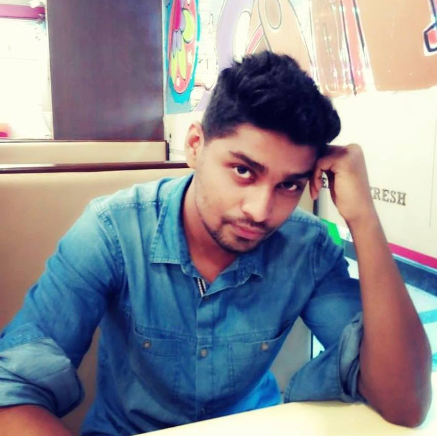

About
Hi, this is Binoy Barman. I've completed my B.Sc Engineering in Information and Communication Technology (ICT) from Mawlana Bhashani Science and Technology University, Tangail Bangladesh.Now I want to persue my M.Sc in Computer Science (CS) and want to devote myself in academic research work.
I have been working with Dr. Sajjad Waheed as his research assistant since June 2015 on Bioinformatics, Wireless Network and Data Mining. And I have published two research works in Wireless Network along with Data Mining.
I have some expertise on Data analysing with MATLAB and SIMULINK, simulation of wireless networks were done by these tools for my research work. I was a competative programmer in university and that's why I have some basic knowledge on programming language like C, C++, JAVA, PYTHON. I also complete two projects on Embeded System, one was a Robot which can be controlled by C Program and another is PC Oscilloscope which was developed by using Rapsberry Pi and JAVA. I also have experience on offline and web based software developing area and I know how to use framework like Drupal, scriping language like HTML, CSS, JS and Java based tools like MAVEN, HIBERNET, STRUTS, SPRING. The use of Database softwares like MySQL and Oracle 10g also incresed my experience. I also know the use of Photoshop and Illiastrator. We use LaTeX and MS Word for writing the research manuscripts.
Personally I like cycling and gym workout. Whenever I get free time I go outside with my bike for riding.
Education
Academic Qualification
Undergraduate Program
B.Sc. Engineering in Information and Communication Technology (ICT)
Mawlana Bhashani Science and Technology University, Tangail, Bangladesh.
CGPA 3.20 (on a scale of 4.00) Certificate
Higher Secondary Certificate (H.S.C) Program
Science Background
RAJUK Uttara Model College, Dhaka, Bangladesh
GPA 5.00 (on a scale of 5.00) Certificate
Secondary School Certificate (S.S.C) Program
Science Background
Bangladesh Railway High School, Bhairab, Bangladesh.
GPA 5.00 (on a scale of 5.00) Certificate
Education Testing Scores:
GRE
Verbal: 143, Quant: 150, AW: 3.5 Total: 296.5
TOEFL
Reading: 20 Listening: 18 Speacking: 20 Writhing: 23 Total: 81
Industrial Training and Workshop
Industrial Training:
4 days Industrial tour on Telecommunication machines, Microwave Station and satellite earth station.
Certificate
Operation System:
2 days training on Basic Linux Operating System by BDOSN.
Certificate
Software Development:
5 days training on Basic Android Development by MoICT.
Certificate
2 days training on Software Design and Code Quality by BASIS.
Database:
18 days training on Oracle 10g Database Development by DevNetIT.
Research
Research Interest
Wireless Network
Data Mining
Biosensors and Bioinformatics
Research Publication (Published/Accepted)
Abul Al Arabi, Binoy Barman Shubha, Anjela Diana Corraya, 2D Multi-gas Mapper with Cascading Module System along with Wireless Sensor Network. (Conference-ICIEV2016, Paper ID: 112) (doi 10.1109/ICIEV.2016.7759975 ).
Binoy Barman Shubha, Sajjad Waheed and Kazi Sadlil Rhythom. Article: False Alarm Detection in Wireless Body Sensor Network using Adaptive and Intelligent Approach. Communications on Applied Electronics 3(6):1-9, December 2015. Published by Foundation of Computer Science (FCS), NY, USA.(doi 10.5120/cae2015651972 )
Scholarship/Award/Grants
Government Scholarships:
Junior School Certificate Examination Scholarship.
Certificate
Education Board Scholarship in Secondary School Certificate Examination.
Government Scholarship in 1st Semester in Undergraduate Program.
Other Scholarship:
"Janata Bank" Scholarship for Secondary School Certificate Examination.
Programming Contest:
MBSTU Intra Department Programming Contest (Rank 2)
MBSTU Intra University Programming Contest (Rank 4)
Science Project Show:
2nd Position in Inter College Science Fair Project Show 2009.
Professional Certificates:
Basic Linux Operation System.
Basic Android Development.
Oracle 10g Developer.
EATL - Prothom Alo Apps Contest 2015.
Certificate
Conference Seminar Attended
5th International Conference on Informatics, Electronics & Vision (ICIEV), 13~14 May, 2016, Dhaka, Bangladesh
Certificate
Research Publications (Ready for Submission)
Structural Health Monitoring using adaptive and intelligent approach via Wireless Sensor Network.
Medical Data Mining and Prediction in Biomedical Health Care.
3D Image Detection using Panorama technique.
Personal
I have some skills on software developing tools. As our B.Sc course inclues some courses like programming language, database learning, web based
software deveoplment and graphics designing I have successfully learnt all of these tecnology and some of them are presented below.
Professional Skills
Language: C, C++, Java, C#, Python, Android
Scripting Language: HTML, CSS, JavaScript
Framework: Drupal
Database: Oracle 10g, MySQL, MS Access
Web/Application Server: Apache, WAMP
IDE: NetBeans, Eclipse, Codeblocks
Networking: Configuring LAN Server(FTP, SMTP)
Runtime Environment: Windows, Linux( Mint )
Graphics: Adobe Photoshop CS3, Adobe Illustrator CS3
Writing & Presentation: MS Office 2010
Personally I like to be a part of all sort of extra curricular activities. I was volunteer and organizer of most of the events of my
college and university. Some exprience of these kinds of works are presented.
Extra-curricular activities
Leadership:
Organizer of a Inter University Gaming Contest.
Organizer of an ICT Expo 2012, MBSTU.
Organized Inter College Math Olympiad 2012, MBSTU.
Organizer of Intra Department Study Tour 2014.
Volunteer:
Volunteer of Intra University Programming Contest 2011, 2012.
Member:
Programming Contest Group "MBSTU-Transformers".
MBSTU Science Club.
Nation Contest Participation:
EATL - Phothom Alo Apps Contest 2015.